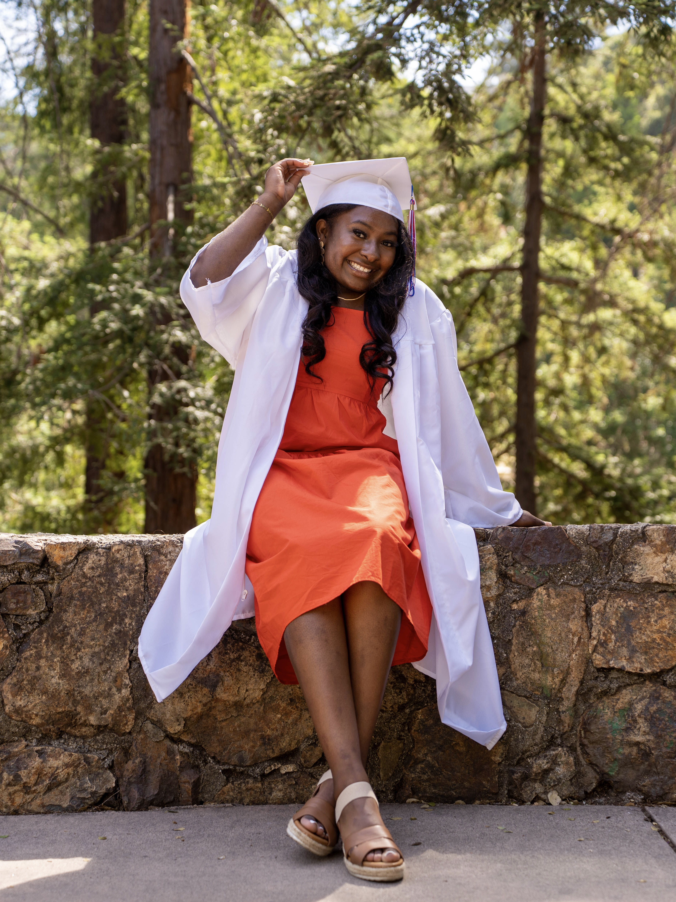

Product & Program
Roadmapping, stakeholder alignment, technical requirements, release coordination, and team communication.
Product-minded technologist & UX-focused collaborator
I build thoughtful digital experiences at the intersection of product, UX/UI design, software development, and technical program management.

Research, team alignment, outcomes
Wireframes, visual systems, user flows
JavaScript, Node.js, D3.js, CI/CD
What I do
My strongest contributions come from turning research into alignment, building clear project structure, and shaping digital experiences with design and engineering teams.
Roadmapping, stakeholder alignment, technical requirements, release coordination, and team communication.
Visual systems, interaction design, client-facing website redesigns, and user-centered layout work.
Front-end interfaces, JavaScript tooling, Node.js services, data visualization, and modern web workflows.
Featured work
Professional internship
Supported cross-functional engineering and product teams at Xbox, helping coordinate workstreams, improve developer workflows, and move goals toward delivery.
Academic research
Modernized a gene regulatory network visualization tool with JavaScript, Node.js, Express, D3.js, and GitHub Actions to improve CI/CD and developer workflows.
Client redesign
Delivered a modern website refresh with UX-focused content structure, polished visual presentation, and a smoother experience for the community.
Creative concept
Designed a playful interaction concept focused on timing, visual rhythm, and a warm brand identity for a small game experience.
Brand concept
Created a friendly visual identity and website concept for a children’s care brand with soft color, personality, and approachable structure.
I’m A'Kaia, a Computer Science graduate from Loyola Marymount University and incoming M.S. Engineering Management student at Purdue University. My background includes technical program management at Xbox, research engineering for GRNsight, and client-facing web design work.
My work feels most grounded when it is warm, clear, and connected to real people. I enjoy shaping practical product direction while keeping design and engineering aligned around shared outcomes.
Let’s connect on ideas, collaboration, or new opportunities.
Get in touch